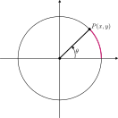
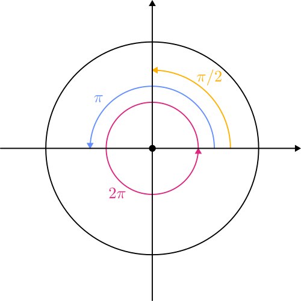
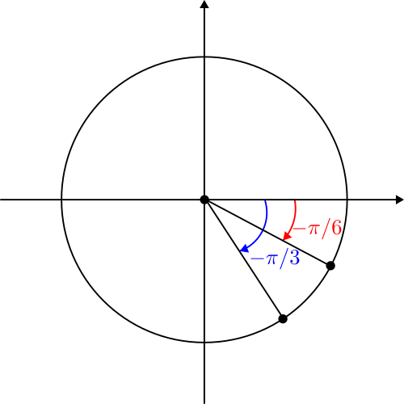
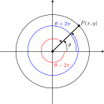
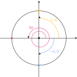
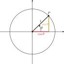
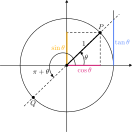
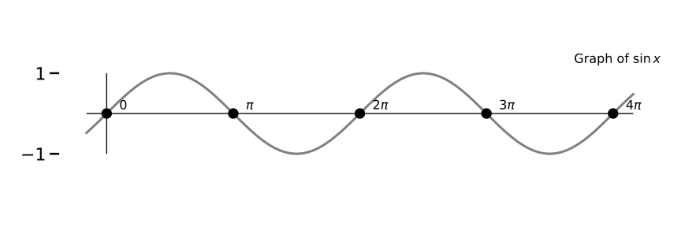
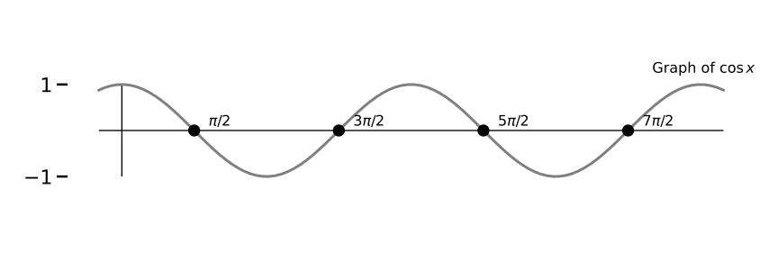
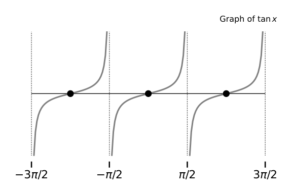

Trigonometry (1/5): Introduction and Overview
Introduction to Engineering Mathematics
Angles and points on the unit circle
The unit circle
- The circle of radius 1 in the \(xy\)-plane, centered on the origin.
- Equation: \(x^2 + y^2 = 1\)
- Four quadrants: \(I\), \(II\), \(III\), \(IV\)
Example
If \(P(\sqrt{3}/2, y)\) is a point on the unit circle, find the value of \(y\).
Angles and points on the unit circle
Each point \(P(x, y)\) defines an angle \(\theta\) measured from the positive \(x\)-axis in counterclockwise direction.
Angles measured in degrees or radians.
- Value of \(\theta\) in radians: length of arc subtended by \(\theta\) (length of the red segment)

Converting between angles and radians
General formula to convert between degrees and radians:
| Degrees | Radians | |
|---|---|---|
| Full circle | \(360^\circ\) | \(2\pi\) |
| Half circle | \(180^\circ\) | \(\pi\) |
| Quarter circle | \(90^\circ\) | \(\pi/2\) |

Negative angles
Measured from the positive \(x\)-axis, in clockwise direction.

Adding \(2\pi\) to an angle
- Point \(P\) is determined by the angle \(\theta\).
- \(P\) stays same when adding \(\pm 2 \pi\) to \(\theta\).
\(\Rightarrow\) All angles \(\theta + 2k \pi\) with \(k \in \mathbb{Z}\) give the same point \(P\).
Principal angle: \(\theta\) such that \(-\pi < \theta \le \pi\).

Trigonometric functions as coordinates
Finding the coordinates of a point
Given an angle \(\theta\), find the coordinates of \(P(x, y)\).
- \(\theta = \pi/2\)
- \(\theta = 3\pi\)
- \(\theta = -\pi/2\)

Finding the coordinates of a point
Slightly more involved case:
- \(\theta = \pi/4\)
Important angles
| Angle | \(x\)-coordinate | \(y\)-coordinate |
|---|---|---|
| \(0\) | \(1\) | \(0\) |
| \(\pi/6\) | \(\sqrt{3}/2\) | \(1/2\) |
| \(\pi/4\) | \(\sqrt{2}/2\) | \(\sqrt{2}/2\) |
| \(\pi/3\) | \(1/2\) | \(\sqrt{3}/2\) |
| \(\pi/2\) | \(0\) | \(1\) |
| \(\pi\) | \(-1\) | \(0\) |
| \(2\pi\) | \(1\) | \(0\) |
Trigonometric functions as coordinates
Let \(\theta\) be an angle with point \(P(x, y)\).
| Name | Notation | Definition |
|---|---|---|
| Cosine | \(\cos \theta\) | \(x\) |
| Sine | \(\sin \theta\) | \(y\) |
| Tangent | \(\tan \theta\) | \(\frac{\sin\theta}{\cos\theta}\) |
| Cotangent | \(\cot \theta\) | \(\frac{\cos\theta}{\sin\theta}\) |
| Cosecant | \(\csc \theta\) | \(\frac{1}{\sin \theta}\) |
| Secant | \(\sec \theta\) | \(\frac{1}{\cos \theta}\) |
Example
Given that \(\displaystyle \theta = \frac{\pi}{6}\), find the values of all 6 trigonometric functions.
Basic trigonometric identities
Fundamental identity
- \(P(x, y)\) is on the unit circle: \(x^2 + y^2 = 1\)
- Put \(x = \cos \theta\) and \(y = \sin \theta\) to obtain the fundamental identity: \[ \fbox{$\cos^2 \theta + \sin^2 \theta = 1$} \]

Aside: notation
Be very careful when you see \(\sin^k \theta\).
- Positive exponent (power): \[ \sin^k \theta = (\sin \theta)^k. \]
- Negative exponent \(-1\) (inverse function): \[ \sin^{-1} y = \arcsin y. \]
Fundamental identity: consequences
\[ 1 + \tan^2 \theta = \sec^2 \theta \]
\[ 1 + \cot^2 \theta = \csc^2 \theta \]
Example
Suppose \(\displaystyle \cos \theta = -\frac{4}{5}\) and \(\theta\) is in quadrant III. Find \(\sin \theta\) and \(\tan \theta\).
Periodicity of sine and cosine
Sine and cosine are \(2\pi\)-periodic: \[\begin{align*} \sin(\theta \pm 2 \pi) & = \sin \theta \\ \cos(\theta \pm 2 \pi) & = \cos \theta \end{align*}\]
The tangent is \(\pi\)-periodic: \[\begin{align*} \tan(\theta \pm \pi) & = \tan \theta \end{align*}\]
Example: Compute \(\displaystyle \tan\left(\frac{8093 \pi}{4}\right)\)

Graphs of trigonometric functions
Graphs of sine/cosine


The sine and cosine:
- Are defined for every real number.
- Oscillate between -1 and +1.
- Repeat themselves every \(2 \pi\) radians (fundamental period).
Graph of the tangent function

The tangent function:
- Is defined for every real number, except multiples of \(\pi/2\).
- Can take on arbitrary values.
- Repeats itself every \(\pi\) radians (fundamental period).
Example
Find the fundamental period of \(\sin(2 x)\).